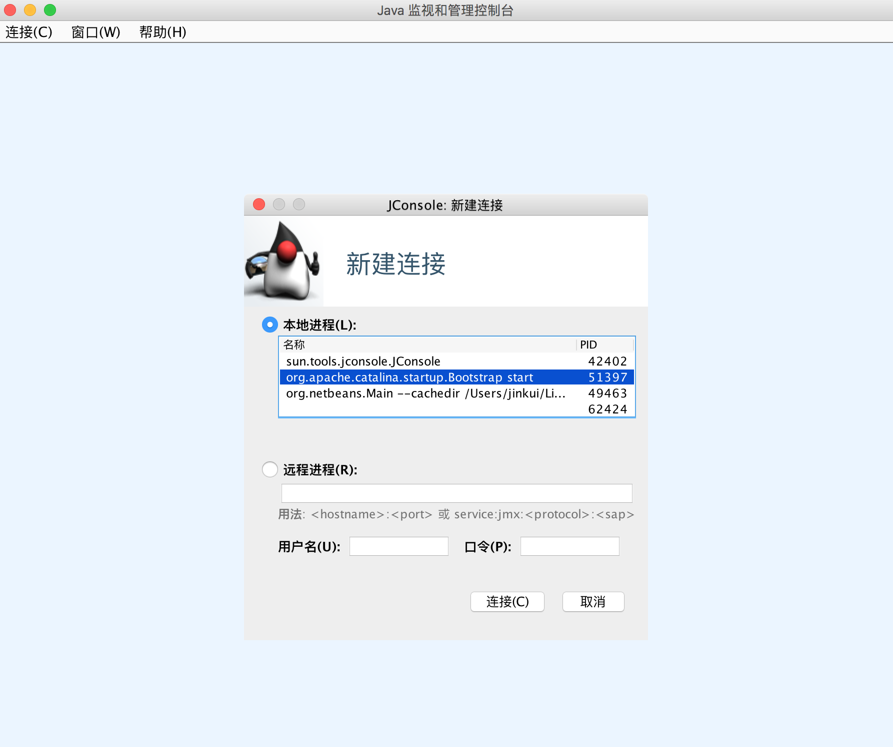
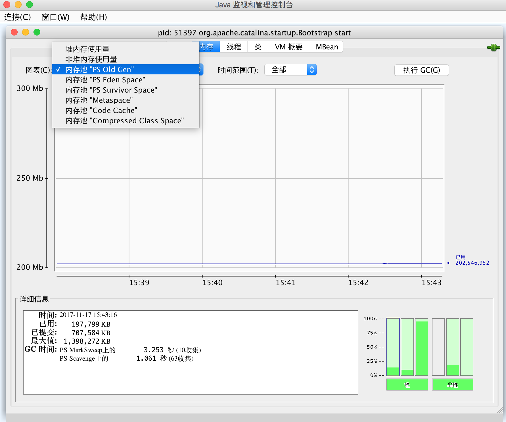
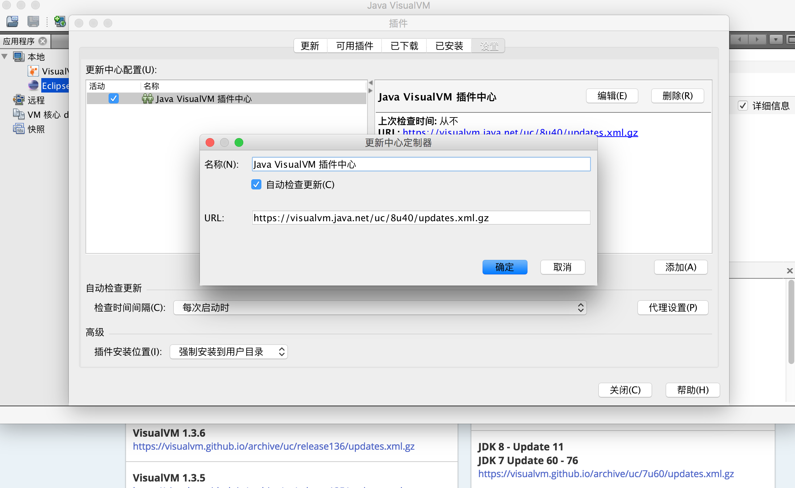
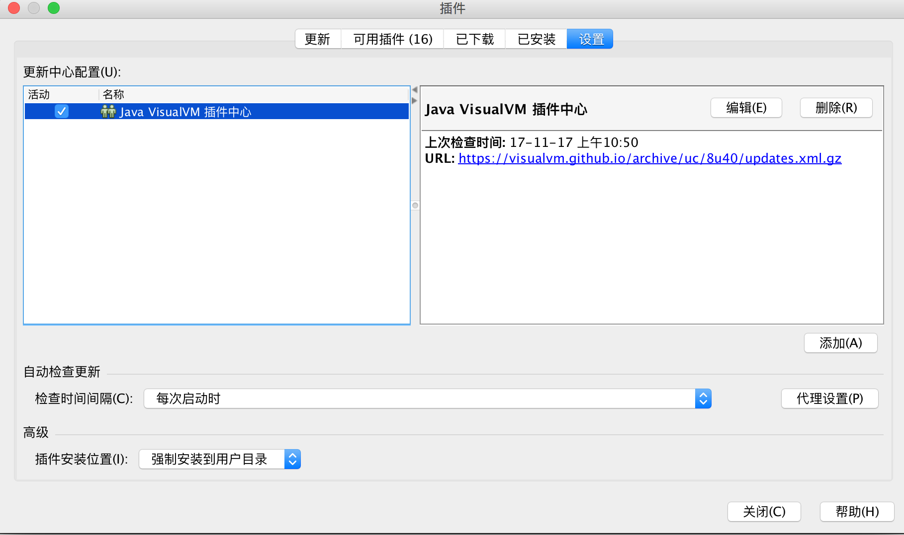
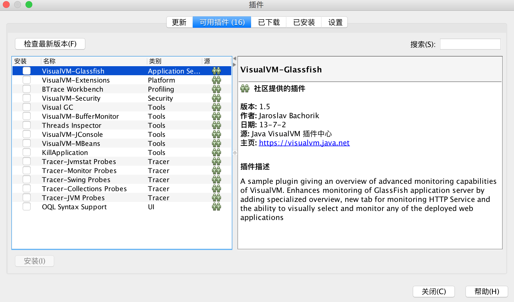
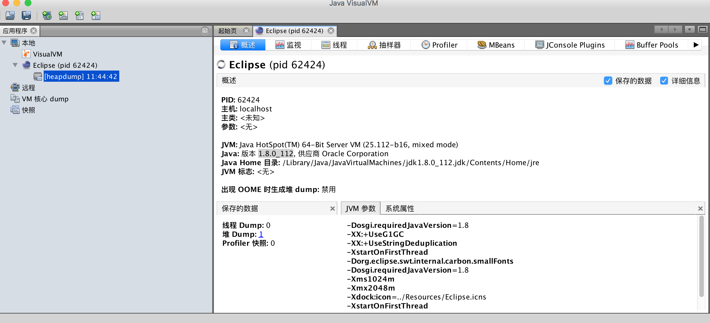
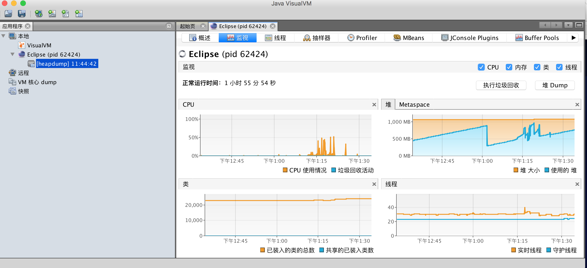

jvm调优工具
jdk的命令行工具
- jps：虚拟机进程状况工具（jps -l）
- jstat：虚拟机统计信息监视工具（jstat -gcutil VMID，stat -gccapacity VMID） （Local Virtual Machine Identifier,LVMID）
- jinfo：Java配置信息工具
- jinfo -flag +PrintGCDetails VMID
- jinfo -flag +PrintGC VMID
- jinfo -flag +PrintGCTimeStamps VMID
以上就可以在一个正在运行的JVM中动态开启GC日志功能。
- jmap：Java内存映像工具
- jmap -heap VMID 显示Java堆详细信息，例如使用哪种回收器、参数配置、分代状况等。
- jhat：虚拟机堆转储快照分析工具
- jstack：Java堆栈跟踪工具
- jstack -l VMID
jdk的可视化工具
jconsole
JDK中自带的java监控和管理控制台，用于对JVM中内存，线程和类等的监控，是一个基于JMX（java management extensions）的GUI性能监测工具。


VisualVM
VisualVM（All-in-One Java Troubleshooting Tool）强大的运行监视和故障处理程序，也能够进行性能分析，CPU、内存，在Profiler页签中能看到。
1.插件安装



2.主界面


因为VisualVM的插件太多，重点展示下Visual GC：
第三方调优工具
- MAT(Memory Analyzer Tool)
- GC Easy
MAT以eclipse插件形式安装,利用visualvm或者是 jmap命令生产堆文件，导入eclipse mat中生成分析报告：


参考在此：
深入理解Java虚拟机 第2版
jvm调优-工具篇 作者：纯洁的微笑